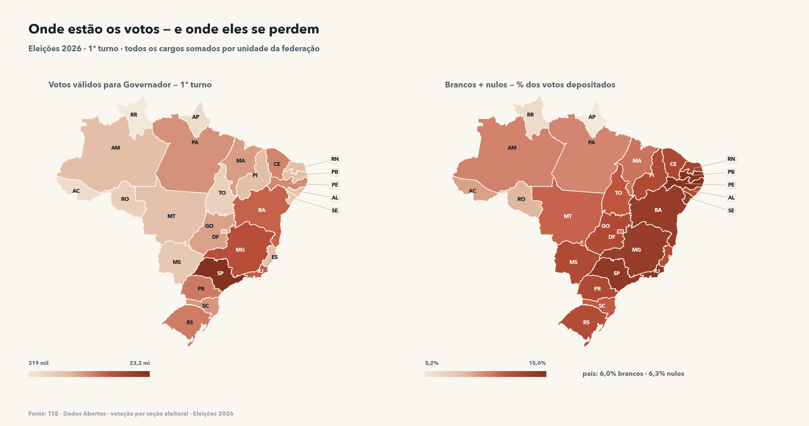
O mapa
As duas leituras do mesmo território: à esquerda, onde estão os votos válidos para governador; à direita, onde eles se perdem em brancos e nulos. O Nordeste concentra os maiores percentuais de voto desperdiçado — Pernambuco lidera com 15,0%.
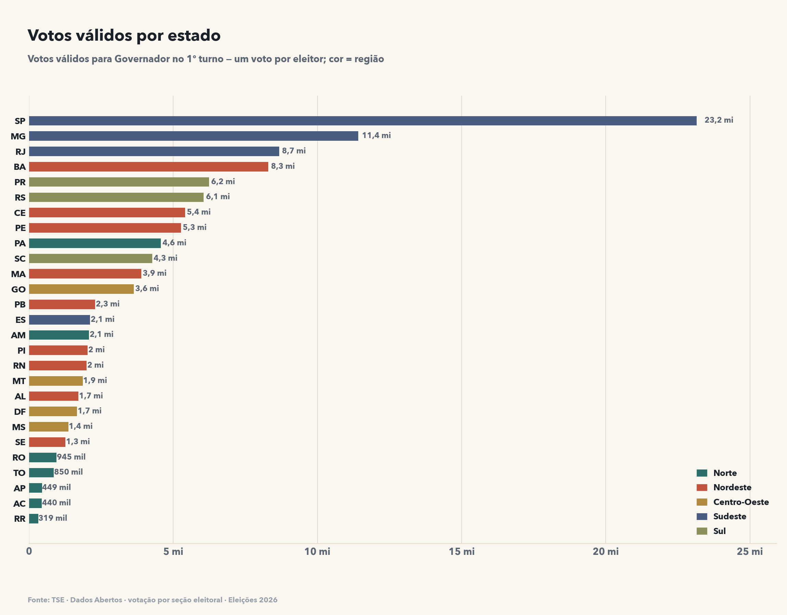
O tamanho de cada estado
São Paulo sozinho tem mais votos válidos que a região Norte inteira. Entre o maior e o menor estado, a diferença é de 72,4 vezes.
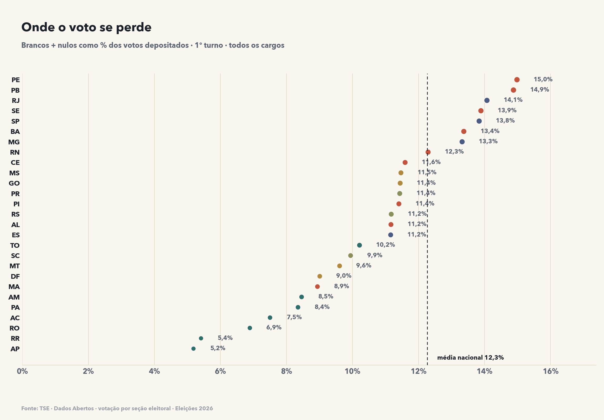
Brancos e nulos
6,0% dos votos foram em branco e 6,3% nulos. A diferença entre o estado mais e o menos desperdiçador passa de 10 pontos percentuais.
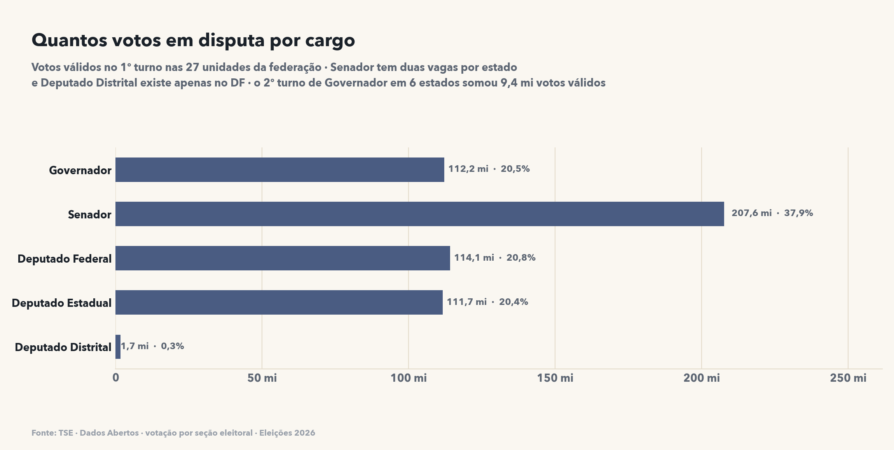
Quantos votos por cargo
Cada eleitor digita cinco números na urna — e dois deles vão para o Senado, o único cargo que aparece com o dobro de votos. Deputado distrital existe apenas no Distrito Federal.
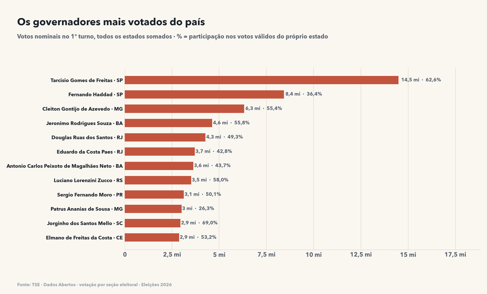
Governadores
Ranking nacional de votos nominais, com a participação de cada um dentro do próprio estado. Tarcísio de Freitas (SP) é o mais votado do país, com 62,6% dos votos válidos paulistas.
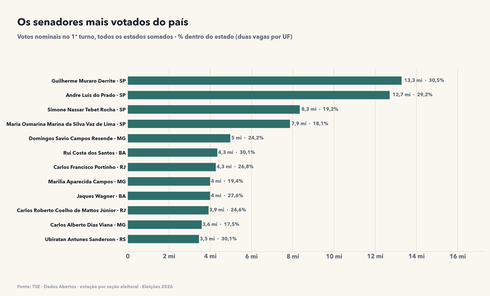
Senadores
Duas vagas por estado: os nomes abaixo somam votos de eleitores diferentes, então o ranking mede peso eleitoral, não vantagem competitiva.
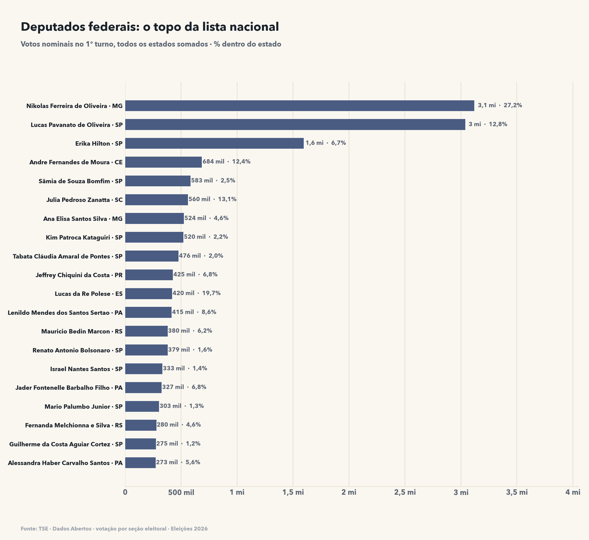
Deputados federais
O topo da lista nacional mostra os puxadores de voto: candidatos que sozinhos somam mais que partidos inteiros, medidos em % dos votos válidos do seu estado.
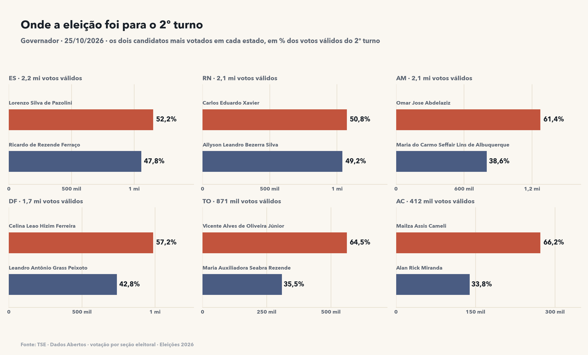
Os seis segundos turnos
Governador foi decidido em dois turnos em 6 estados (ES, RN, AM, DF, TO, AC), somando 9,4 mi votos válidos em 25/10.
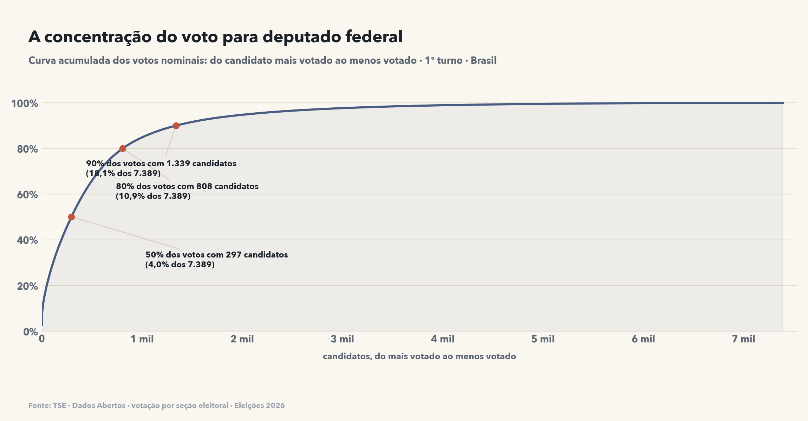
A concentração do voto
Metade dos votos nominais para deputado federal ficou com 297 candidatos — 4% do total. A cauda longa de candidatos leva poucos votos cada.
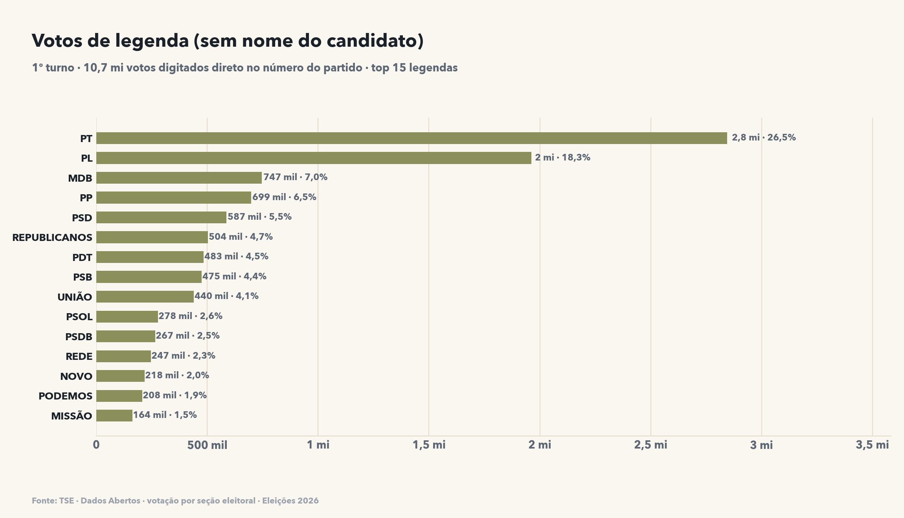
Voto de legenda
10,7 mi votos foram digitados direto no número do partido (voto de legenda), sem escolher um nome — PT e PL concentram quase metade desse total.
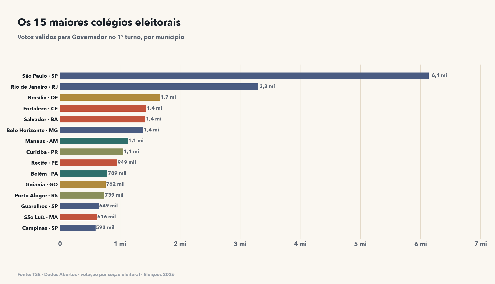
Colégios eleitorais
São Paulo, Rio e Brasília lideram; nenhum município fora das capitais e regiões metropolitanas aparece entre os quinze maiores.
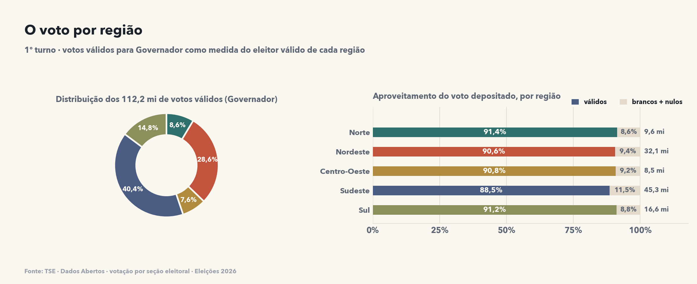
Regiões
O Sudeste tem 40% dos votos válidos e também o pior aproveitamento: 11,5% dos votos depositados não foram válidos.
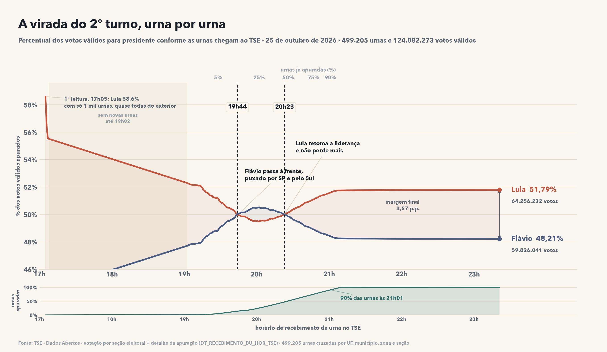
A apuração, urna por urna
Reconstrução minuto a minuto do 2º turno presidencial pela hora em que cada arquivo CHEGOU ao TSE: Flávio liderou entre as 19:44 e as 20:23, quando 14% a 47% das urnas já haviam sido apuradas. Dali em diante Lula abriu vantagem e fechou em 51,79% × 48,21% — margem de 3,57 pontos, com 124.082.273 votos válidos.
Os 27 estados, lado a lado
Votos do 1º turno somando todos os cargos. Clique nos títulos para ordenar.
| UF | Região | Válidos | Brancos | Nulos | Brancos + nulos |
|---|---|---|---|---|---|
| SP | Sudeste | 113.708.805 | 9.048.968 | 9.213.507 | 13,8% |
| MG | Sudeste | 54.724.816 | 4.384.685 | 4.026.334 | 13,3% |
| RJ | Sudeste | 42.300.800 | 3.291.553 | 3.636.982 | 14,1% |
| BA | Nordeste | 39.182.047 | 2.321.609 | 3.727.239 | 13,4% |
| PR | Sul | 30.244.282 | 2.166.409 | 1.737.384 | 11,4% |
| RS | Sul | 29.745.061 | 2.291.792 | 1.450.267 | 11,2% |
| CE | Nordeste | 26.103.889 | 1.532.298 | 1.891.423 | 11,6% |
| PE | Nordeste | 25.101.994 | 2.062.769 | 2.361.417 | 15,0% |
| PA | Norte | 23.199.997 | 863.110 | 1.250.643 | 8,4% |
| SC | Sul | 20.868.446 | 1.264.391 | 1.039.913 | 9,9% |
| MA | Nordeste | 18.933.267 | 901.004 | 957.704 | 8,9% |
| GO | Centro-Oeste | 17.562.523 | 1.196.616 | 1.073.301 | 11,4% |
| PB | Nordeste | 11.397.448 | 865.286 | 1.126.786 | 14,9% |
| ES | Sudeste | 10.432.816 | 691.141 | 619.103 | 11,2% |
| AM | Norte | 10.217.180 | 407.095 | 537.080 | 8,5% |
| PI | Nordeste | 9.919.750 | 515.263 | 761.917 | 11,4% |
| RN | Nordeste | 9.506.376 | 586.905 | 745.289 | 12,3% |
| MT | Centro-Oeste | 9.263.622 | 488.289 | 496.679 | 9,6% |
| AL | Nordeste | 8.598.294 | 428.031 | 652.775 | 11,2% |
| DF | Centro-Oeste | 8.270.684 | 452.656 | 366.265 | 9,0% |
| MS | Centro-Oeste | 6.812.516 | 468.826 | 413.703 | 11,5% |
| SE | Nordeste | 6.185.178 | 423.240 | 574.627 | 13,9% |
| RO | Norte | 4.610.321 | 170.185 | 171.059 | 6,9% |
| TO | Norte | 4.326.849 | 173.672 | 318.529 | 10,2% |
| AC | Norte | 2.256.797 | 68.720 | 114.338 | 7,5% |
| AP | Norte | 2.256.706 | 40.431 | 82.958 | 5,2% |
| RR | Norte | 1.569.962 | 37.248 | 52.585 | 5,4% |
Como os números foram feitos
- Baixados os 27 arquivos
votacao_secao_2026_UF.zipdo portal de dados abertos do TSE e descompactados emcsv/(um CSV por estado, ~18 GB no total). - Os CSVs foram consolidados em uma única tabela (
dados/agregado.parquet) com três recortes: UF × cargo, município × cargo e candidato. - Votos válidos = votos nominais + votos de legenda (exclui brancos e nulos). Votos depositados = tudo que entrou na urna.
- Para comparar estados usa-se o voto para governador: é a única escolha em que cada eleitor deposita exatamente um voto, então serve como medida de eleitor válido.
- Votos de legenda são identificados pelo código de candidato
-3; brancos e nulos, por-1. - A apuração minuto a minuto não existe pronta: o arquivo de votação tem só o resultado final.
O horário de cada urna vem do Detalhe da apuração por seção eleitoral
(
DT_RECEBIMENTO_BU_HOR_TSE), cruzado com os votos por UF + município + zona + seção. - Os percentuais da apuração são cumulativos: cada ponto soma todas as urnas recebidas até aquele minuto. Entre 17h07 e 19h02 nenhuma urna nova chegou ao TSE, por isso o patamar reto no começo.
- Sem dados de abstenção nem de comparecimento (essas bases vêm em outro conjunto do TSE).
gerado em 27/10/2026 17:41 · analise.py → graficos.py → relatorio.py